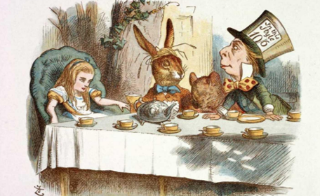
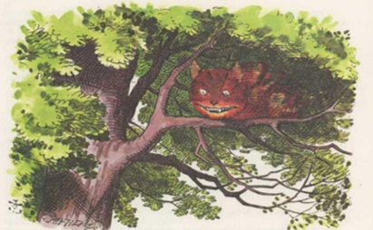

Lección 3 ¿Realidad o ficción?
Contesta las siguientes cuestiones:
¿Crees en los fantasmas u otras formas sobrenaturales?
No
¿Existe la llorona? ¿Cómo lo sabes?
No lo se, puede que si
¿Has pensado alguna vez que alguien está molesto contigo, y en realidad sólo estaba distraído por otra situación?
Si, no no lo esta
¿Has experimentado un dejá-vu, es decir, situaciones nuevas pero que te den la sensación de que ya lo habías vivido? Describe una.
Si,Contestar esta pregunta, hace dods dias yo ya habia contestado esta pregunta, pero ahora estoy aqui de nuevo, se siente familiar
¿Cómo puedes estar seguro de que cómo es el rojo y que es igual para todos? Explícalo.
conciencia colectiva, por la refraccion de la luz y la explicacion cientifica
COMPRENDIENDO
Es posible que te haya sucedido que has tenido un sueño muy intenso, por ejemplo, que estás volando o te persigue un monstruo y sólo has estado corriendo entre callejones tratando de escapar, o que estás en tu casa, pero al cruzar la puerta te encuentras en otra ciudad o en la playa. ¿Te has dado cuenta que difícilmente puedes comprender que estás en un sueño?
Generalmente hay cosas de las cuales no tienes duda, como de que hay un piso debajo de ti, de la calle fuera de tu casa o de tu propio cuerpo, y por esta razón ni siquiera haces un esfuerzo por pensar en ello, pues es normal y lógico que existan; es decir, de alguna manera tú sabes que eso existe. Pero, ¿cómo sabes que son reales? ¿Y si existieran sólo en tu mente? ¿Cómo puedes estar seguro de que no simplemente son parte de otro gran sueño del cual no estás ni cerca de despertar?
¿Te imaginas si lo último fuera verdad?, entonces no podrías despertar, y tampoco tendría caso intentar despertar, porque entonces no habría un mundo al cual despertar. Parece aterrador. Sin embargo, también debes considerar que los sueños normalmente dependen de lo que está sucediendo en el subconsciente del cerebro de la persona mientras duerme, por tanto, ¿Cómo sabrías que estás soñando? ¿Cómo podrías saber que todo lo que haces por probar que hay un mundo exterior es sólo parte del sueño? ¿Cómo podrías saber entonces que no es todo producto de tu imaginación?
Afortunadamente, eso no es posible. Sería un absurdo que todo sea producto de tu mente, pero esto sí te puede dar una pista para entender el problema de lo que consideramos real. Lo real se entiende como “aquello que pertenece al mundo en el que vivimos y, por lo tanto, existe en el espacio-tiempo” (realidad - Encyclopaedia Herder, s.f.). Generalmente, esto puede apreciarse a través de los sentidos y de forma empírica lo puedes conocer.
Los griegos distinguían dos formas de entender lo que es real, y lo explicaban a partir de lo que tienen un conocimiento, por ejemplo, llamaban arkhé a aquello que tiene forma y sustancia, y decían que eso era del mundo real pues por esas cualidades es que podemos ver su apariencia; sin embargo, aquí entra la segunda categoría, la de las ideas, que es meramente posible o ideal, es decir, lo subjetivo o que está formado en tu mente.
Ambas son importantes para distinguir y entender el mundo, pero los planos en los que lo explican difieren. Por ejemplo, tú puedes entender que un árbol es “real” porque puedes ver su sustancia: su tronco, sus ramas y hojas, porque ocupa un espacio, etc. Lo percibes como “real”, porque puedes acceder a él a través de los sentidos. Pero, ¿qué sucede con las ideas? Por ejemplo, ¿podrías decir que es “real” algún superhéroe fantástico, como Superman? Podemos decir que sí existe, tienes una idea de cómo es, cómo luce, sabes su historia y también de lo que es capaz con sus súper poderes; sin embargo, la pregunta sigue, ¿es real?
Es importante que distingas que hay cosas que existen y no necesariamente son reales, tal como lo experimentas en tus sueños, pues finalmente el fantasma que te persigue no te podrá hacer un daño real. Sin embargo, la impresión que tienen en ti puede ser determinante para que en adelante tengas terrores nocturnos. Otro ejemplo pueden serideas muy arraigadas en nuestro desarrollo como humanos, tal como la noción de átomos; sabemos que existen, tus maestros te los han enseñado en la escuela, con modelos y explicaciones de cómo estos construyen estructuras más complejas llamadas moléculas que llegan a constituir objetos; sin embargo, ¿cómo podríamos asegurar que son reales? Hasta el momento no existe ningún microscopio que haya podido observar de forma directa a uno, sólo hemos aprendido a interpretar algunas manifestaciones de energía que creemos que son de ellos y los modelos que se han hecho hacen posible explicar su existencia.
A partir de esto, es importante que puedas observar cómo tu percepción de la realidad en muchas de las ocasiones no responde a lo que puedes ver, escuchar, probar, etcétera. Mucha de la información que está a tu alrededor a veces pasa desapercibida para ti; por comodidad, tu cerebro llena muchos pequeños huecos de tu entorno con las ideas que te hacen entender cómo es el mundo, porque es normal que existan, por ejemplo las calles, casas o personas que cruzas en tu día a día, sólo por mencionar algunas cosas. De igual forma, hay ideas que te ayudan a darle sentido a lo que ocurre en tu alrededor, los sentimientos y emociones, o ciertas actitudes que te permiten reconocer situaciones y, no obstante, no debes olvidar que son meras ideas, formas en las que representas la realidad y, así, todo lo asumes por la apariencia que representa.
La apariencia es la idea inmediata de algo, la forma en que lo interpretamos rápidamente a lo que aproximadamente o relativamente es. Se puede definir como “el conocimiento incompleto y superficial, en contraposición a la realidad, o conocimiento verdadero y profundo, y la distinción suele hacerse tanto en la vida ordinaria, como en la reflexión filosófica y en el enfoque científico” (Apariencia, Encyclopaedia Herder, s.f.).
Por lo tanto, en adelante, podrías ser más cuidadoso respecto de lo que las cosas aparentan ser, como cuando crees que una persona está enojada porque tiene una expresión dura en el rostro, si deberías llamar a Gal Gadot la Mujer Maravilla y no Gal Gadot, incluso, lo que consideras amor si es realmente amor, o si en verdad existe un dios o si existen los fantasmas, entre muchas otras cosas. Tal vez, la próxima vez podrías detenerte un poco para ver si la sombra que viste de reojo que te estaba siguiendo es alguna hoja que mueve el viento y no propiamente algún ser sobrenatural.
Finalmente, es importante que puedas distinguir entre las categorías de lo que es real y lo que existe, pues la forma en la que interpretas el mundo tiene que ver con tu capacidad conjugarlas. Así, es factible que les des un valor de verdad al edificio de la escuela, a la calle, a tus amigos; y de igual manera, a nociones mentales como lo es un año, los átomos, los seres sobrenaturales, las matemáticas, etcétera.
Recuerda entonces que ambas construyen lo que es tu realidad y, por tanto, aunque muchas de estas son compartidas por otras personas, no siempre todos coincidirán en lo que es real o no, por ejemplo, en los alienígenas, los fantasmas, las religiones, etcétera.
1.Lee con atención el siguiente fragmento de la novela de Alicia en el País de las Maravillas del autor Lewis Carrol.
1. Lee con atención el siguiente fragmento de la novela de Alicia en el País de las Maravillas del autor Lewis Carrol.
Una merienda de locos. Ilustración de sir John Tenniel.(Tomado de http://www.rtve.es/noticias/20151206/edicion-definitiva-alicia-pais-maravillas-su-150- aniversario/1266641.shtml)
«¡Si supiéramos la manera de transformarlos!», se estaba diciendo, cuando tuvo un ligero sobresalto al ver que el Gato de Cheshire estaba sentado en la rama de un árbol muy próximo a ella.
El Gato, cuando vio a Alicia, se limitó a sonreír. Parecía tener buen carácter, pero también tenía unas uñas muy largas Y muchísimos dientes, de modo que sería mejor tratarlo con respeto.
—Minino de Cheshire —empezó Alicia tímidamente, pues no estaba del todo segura de si le gustaría este tratamiento: pero el Gato no hizo más que ensanchar su sonrisa, por lo que Alicia decidió que sí le gustaba—.
—Minino de Cheshire, ¿podrías decirme, por favor, qué camino debo seguir para salir de aquí?
—Esto depende en gran parte del sitio al que quieras llegar —dijo el Gato.
—No me importa mucho el sitio... —dijo Alicia.
—Entonces tampoco importa mucho el camino que tomes —dijo el Gato.
—... siempre que llegue a alguna parte —añadió Alicia como explicación.
—¡Oh, siempre llegarás a alguna parte —aseguró el Gato—, si caminas lo suficiente!
A Alicia le pareció que esto no tenía vuelta de hoja, y decidió hacer otra pregunta:
—¿Qué clase de gente vive por aquí?
—En esta dirección —dijo el Gato, haciendo un gesto con la pata derecha— vive un Sombrerero. Y en esta dirección —e hizo un gesto con la otra pata— vive una Liebre de Marzo. Visita al que quieras: los dos están locos.
—Pero es que a mí no me gusta tratar a gente loca —protestó Alicia.
—Oh, eso no lo puedes evitar —repuso el Gato—. Aquí todos estamos locos. Yo estoy loco. Tú estás loca.
—¿Cómo sabes que yo estoy loca? —preguntó Alicia.
—Tienes que estarlo —afirmó el Gato—, o no habrías venido aquí.
Alicia pensó que esto no demostraba nada. Sin embargo, continuó con sus preguntas:
—¿Y cómo sabes que tú estás loco?
—Para empezar —repuso el Gato—, los perros no están locos. ¿De acuerdo?/p>
—Supongo que sí —concedió Alicia.
—Muy bien. Pues en tal caso —siguió su razonamiento el Gato—, ya sabes que los perros gruñen cuando están enfadados, y mueven la cola cuando están contentos. Pues bien, yo gruño cuando estoy contento, y muevo la cola cuando estoy enfadado. Por lo tanto, estoy loco.
—A eso yo le llamo ronronear, no gruñir —dijo Alicia.
—Llámalo como quieras —dijo el Gato—. ¿Vas a jugar hoy al croquet con la Reina?
—Me gustaría mucho —dijo Alicia—, pero por ahora no me han invitado.
—Allí nos volveremos a ver —aseguró el Gato, y se desvaneció.
A Alicia esto no la sorprendió demasiado, tan acostumbrada estaba ya a que sucedieran cosas raras. Estaba todavía mirando hacia el lugar donde el Gato había estado, cuando éste reapareció de golpe.
—A propósito, ¿qué ha pasado con el bebé? —preguntó—. Me olvidaba de preguntarlo.
—Se convirtió en un cerdito —contestó Alicia sin inmutarse, como si el Gato hubiera vuelto de la forma más natural del mundo.
—Ya sabía que acabaría así —dijo el Gato, y desapareció de nuevo.
Alicia esperó un ratito, con la idea de que quizás aparecería una vez más, pero no fue así, y, pasados uno o dos minutos, la niña se puso en marcha hacia la dirección en que le había dicho que vivía la Liebre de Marzo.
—Sombrereros ya he visto algunos —se dijo para sí—. La Liebre de Marzo será mucho más interesante. Y además, como estamos en mayo, quizá ya no esté loca... o al menos quizá no esté tan loca como en marzo.
Mientras decía estas palabras, miró hacia arriba, y allí estaba el Gato una vez más, sentado en la rama de un árbol.
—¿Dijiste cerdito o cardito? —preguntó el Gato.
—Dije cerdito —contestó Alicia—. ¡Y a ver si dejas de andar apareciendo y desapareciendo tan de golpe! ¡Me da mareo!
—Dije cerdito —contestó Alicia—. ¡Y a ver si dejas de andar apareciendo y desapareciendo tan de golpe! ¡Me da mareo!
Y esta vez desapareció despacito, con mucha suavidad, empezando por la punta de la cola y terminando por la sonrisa, que permaneció un rato allí, cuando el resto del Gato ya había desaparecido.
—¡Vaya! —se dijo Alicia—. He visto muchísimas veces un gato sin sonrisa, ¡pero una sonrisa sin gato! ¡Es la cosa más rara que he visto en toda mi vida!
No tardó mucho en llegar a la casa de la Liebre de Marzo. Pensó que tenía que ser forzosamente aquella casa, porque las chimeneas tenían forma de largas orejas y el techo estaba recubierto de piel. Era una casa tan grande, que no se atrevió a acercarse sin dar antes un mordisquito al pedazo de seta de la mano izquierda, con lo que creció hasta una altura de unos dos palmos. Aún así, se acercó con cierto recelo, mientras se decía a sí misma:
—¿Y si estuviera loca de verdad? ¡Empiezo a pensar que tal vez hubiera sido mejor ir a ver al Sombrerero! (Carrol, s.f.).
Contesta las siguientes preguntas, tomando en cuenta la lectura anterior.
¿A partir de tu experiencia, has tenido un sueño tan intenso que cuando despertaste seguías asegurando que era real? Describe tu experiencia.
Mori en mi suelo de un disparo al cuello, cuando desperte sentia un ardor horrible en el lugar del disparo, despues me volvi a quedar dormiddo :)
¿Cómo puedes estar ahora seguro de que no fue real, si cuando lo soñaste te provocó emociones y sentimientos como si fuera algo real?
Por que desperte, supongo que despues de despertar se sintio mas como un sueño que como a vida real
¿Imaginas poder hablar con un gato que puede desvanecerse, como el de Cheshire que se le presenta a Alicia?
Ya lo hago, es bueno tener con quien hablar alguin que si te entiende
Hablando del tiempo, ¿existe? ¿Es real?
el tiempo es relativo, lo unico de lo que estoy conciente de que existe es el ahora
¿Has vivido un dèja vu? ¿Crees que sea real que hayas vivido una situación particular nuevamente? ¿Qué es lo real?
Yo creo que se vivio una situacion similar, pero no la misma, dio la casualidad de que son situaciones similares con las mismas circunstancias del momento
¿Qué sería la existencia?
La existencia se refiere a la condición o estado de estar presente en el mundo físico o mental. Es el hecho de ser real y tener una realidad tangible o intangible. Desde una perspectiva filosófica, la existencia puede ser considerada como la propiedad fundamental de cualquier cosa que es o puede ser.
La sociedad, es real, existen, ¿o cumplen ambas categorías? ¿Por qué?
La sociedad es una realidad tangible e intangible que existe en el mundo en el que vivimos. Por lo tanto, cumple ambas categorías de existencia.
AUTOEVALUACION
| Indicadores | Puedo lograrlo | Tengo dudas |
|---|---|---|
| Puedo diferenciar de mi entorno las cosas que son reales y cuales existen. | x | |
| Logro comprender las categorías de lo que aprecio de forma objetiva, respecto de lo que es subjetivo. | x | |
| Consigo diferenciar la realidad de lo que imagino que podría ser posible o de mis sueños | x | |
| Tengo la capacidad de valorar y respetar las diferencias entre mi realidad y la de los demás. | x | |
| engo la capacidad de valorar y respetar las diferencias entre mi realidad y la de los demás. | x | |
| ¿Sobre qué temas requiero más Asesoría Académica?
NINGUNO |
||